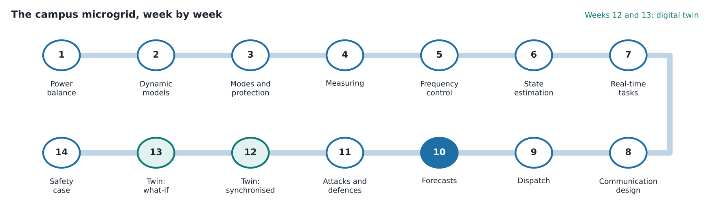
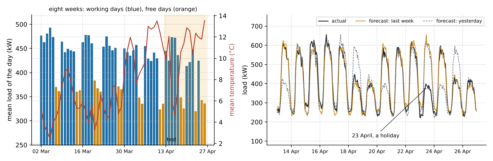
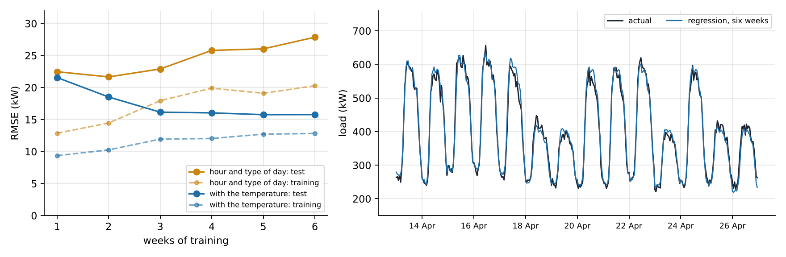
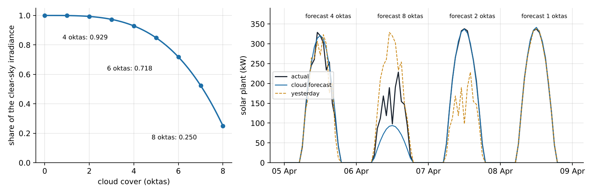
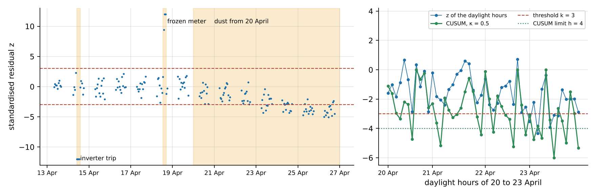
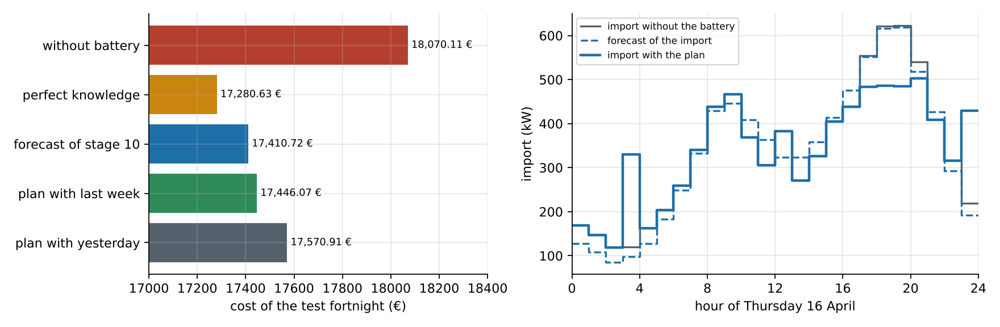

Overview
Week 9 planned the day of the campus as if its import were known at midnight. In practice the plan needs a forecast, and the forecast must be learnt from the measurements of the past weeks. This week turns the data of the meters into forecasts of the load and of the generation. It also uses the same models to notice when a measurement does not fit, the start of anomaly detection [1].
flowchart LR A["Time series and errors"] --> B["Regression of the load"] B --> C["Forecasts of the generation"] C --> D["Anomaly detection"] D --> S["The campus microgrid, stage 10"] S --> FT["In the field: The pyranometer"] FT --> H["Learning machines"]
Every method on this page is also written as Python code in the Colab notebook of the week. Its code is divided into numbered sections. Each orange box on this page names the section whose code carries out what the text above the box explains. The box says what to run and what to look at in that section, and its button opens the Colab notebook at that place. The virtual laboratories, the practice parts and the self-assessment of the week are in the interactive lab. Each blue box opens one part of the interactive lab. The part ends with a link back to its box on this page, and the Colab notebook is always opened from the orange boxes here.
Python step 10: Fitting and forecasting
Python code in the Colab notebook, right after Section 0 (setup). Open the Colab notebook and run this step cell by cell: It consists of short pieces of Python code with their explanations, a quick check and three exercises. Topics: A time series with pandas · A straight line through points · Errors of a forecast.
The step introduces time series in pandas [2]. It cuts a week out of the eight weeks of the campus and averages its days. It then fits a straight line through the working mornings with NumPy and measures the errors of a forecast. Students who have never programmed start with the start-here notebook of the course.
Weeks 1 to 9 built the balance, the dynamics, the modes, the measurements, the controllers, the estimators, the real-time tasks, the networks and the optimal plans of the campus. The plan of Week 9 assumed that the import of the whole day was known in advance.
This week learns the forecasts that such a plan needs and watches the solar plant for faults.

Time series and forecast errors
The meters of the campus record every hour. They measure the load of the buildings, the car park, the solar plant, the wind turbine and the import from the grid. The weather station adds the outdoor temperature and the irradiance. Eight weeks from Monday 2 March to Sunday 26 April 2026 form a time series of 1344 hours. The data of this week is a synthetic history, built from the models of the earlier weeks with random weather. It holds two holidays, the Ramadan Feast on Friday 20 March and National Sovereignty and Children's Day on Thursday 23 April, and a cold spell from 15 to 18 April.
A forecast is tested on hours that it has not seen. For a time series, the split must follow time: The first six weeks serve for learning, the training weeks, and the last two weeks for testing, the test fortnight. A random split would let the model learn from the days around each test day, which a real forecast never knows. Two naive forecasts set the bar that every model must clear. The forecast yesterday repeats the same hour of the day before, \(\hat{y}_t = y_{t-24}\), and the forecast last week the same hour seven days before, \(\hat{y}_t = y_{t-168}\).
Three measures summarise the errors \(y_t - \hat{y}_t\) of a forecast over \(N\) hours [3]. The mean absolute error (MAE) and the root mean square error (RMSE) are in kW, and the mean absolute percentage error (MAPE) in percent:
The RMSE squares the errors before the mean, so one large error weighs more than several small ones. The MAPE compares errors across loads of different size, but it explodes when the actual value is close to zero.
A worked example. Three hours have the actual load 430, 465 and 512 kW and the forecast 442, 455 and 530 kW. The errors are −12, 10 and −18 kW. The MAE is \((12 + 10 + 18)/3 = 13.33\) kW, and the RMSE \(\sqrt{(144 + 100 + 324)/3} \)\({}= \sqrt{189.33} \)\({}= 13.76\) kW. The MAPE is \(100 \times (12/430 + 10/465 + 18/512)/3 \)\({}= 2.82\) percent.
Over the test fortnight, the forecast yesterday has an MAE of 57.04 kW, an RMSE of 83.04 kW and a MAPE of 13.63 percent. It fails on Mondays, when it repeats a Sunday, and on Saturdays, when it repeats a Friday. The forecast last week does better, with an MAE of 31.27 kW, an RMSE of 52.32 kW and a MAPE of 8.49 percent. On the holiday of 23 April, however, it repeats a working Thursday and misses by 152.21 kW on average.
Animation. Three forecasts of the test fortnight. The black line is the actual load of the campus, and the coloured line the forecast yesterday, last week or of the regression. Add a constant bias to the forecast and watch the MAE, the RMSE and the MAPE change. The shaded day is the holiday of 23 April.

Check your understanding. Why is a forecast of a time series tested on days after its training days?
Python code in the Colab notebook, Section 1. Open Section 1 of the Colab notebook and run it. The function errors computes the MAE, the RMSE and the MAPE, and shift(24) and shift(168) build the forecasts yesterday and last week. The code prints their errors on the test fortnight, on the holiday and in the cold spell, and draws the eight weeks.
- The battery of Week 9 cares most about the evening peak. Which error measure would you report to its planner, and for which hours?
- Why can a forecast with a small MAE still be dangerous for the grid?
Regression: Forecasting the load
A linear regression explains the load \(y\) by a weighted sum \(\hat{y} = x^T \beta\) of features \(x\). Least squares chooses the weights \(\beta\) that make the sum of the squared errors over the training hours as small as possible [4]. With all training hours as the rows of a matrix \(X\):
With a single feature \(x\), the solution is a straight line \(\hat{y} = a + b\,x\) through the means of the data:
A worked example. Five working mornings at 08:00 have the outdoor temperatures 0.5, 3.8, 6.0, 8.9 and 10.8 °C and the loads 584.4, 538.0, 523.3, 528.6 and 520.6 kW. The means are \(\bar{x} = 6.00\) °C and \(\bar{y} = 538.98\) kW. The sums give \(b = -365.98/66.54 = -5.50\) kW per kelvin and \(a = 538.98 + 5.50 \times 6.00 = 571.98\) kW. For the cold Thursday 16 April, the weather service forecasts 2.3 °C, and the line forecasts \(571.98 - 5.50 \times 2.3 = 559.33\) kW. The meters then record 581.2 kW.
The load model of the campus follows the same idea with more features, in the spirit of the regression models of Hong and colleagues [5]. Each hour \(h\) of each type of day \(c\), working or free, has its own coefficient \(a_{c,h}\). One heating coefficient \(b\) multiplies the heating degrees, the kelvins below 15 °C:
These are 49 coefficients. The type of day comes from the official calendar, so holidays count as free days. The model learns from the measured temperature and forecasts with the temperature forecast of the weather service for the next day. Learnt from the six training weeks, it finds \(b = 5.536\) kW per kelvin and \(a_{\text{work},8} = 490.45\) kW. For 08:00 on 16 April it forecasts \(490.45 + 5.536 \times 12.7 = 560.77\) kW.
On the test fortnight the model reaches an MAE of 12.16 kW, an RMSE of 15.77 kW and a MAPE of 3.09 percent. Its RMSE lies 70 percent below that of the forecast last week. Each part of the model has its role. Without the official calendar, the model treats 23 April as a working day, and its RMSE rises to 38.59 kW. Without the temperature, the RMSE is 27.86 kW. With six weeks of training it also gets worse than with two (21.66 kW), because the colder weeks of March raise the means of every hour.
The length of the training sets the balance between too little data and outdated data. With one week, the 49 coefficients learn from only 168 hours: The training RMSE is 9.36 kW, but the test RMSE is 21.56 kW. The model has learnt the noise of that week, which is called overfitting. With six weeks, the training RMSE is 12.82 kW and the test RMSE 15.77 kW, and the two are close.
Scene: A surface through the data. The working hours of the six training weeks as points over the hour of the day and the outdoor temperature, with the load as their height. The five buttons add the mean of each hour as an orange surface and the regression with the temperature as a blue one. They then show the residuals as sticks and the holiday of 23 April as red points.

Check your understanding. Why does the model without the temperature get worse with more weeks of training?
Interactive lab, Part A. The metering room in 3D: The smart meters of the five buildings with their data concentrator and the edge server that computes the forecast. Two screens show the forecast and the weather service. Forecast the test fortnight with the naive forecasts and with the regressions, with and without the official calendar and with different weeks of training. The results can be copied into the Colab notebook.
→ These formulas with numbers, step by step: Lab Part B, calculator, steps 1 to 3.
Python code in the Colab notebook, Section 2. Open Section 2 of the Colab notebook and run it. The function features builds the matrix of the 49 features, and fit_load learns the coefficients with np.linalg.lstsq and forecasts the test fortnight. The code prints the errors of twelve variants of the model. Paste the results of Part A into MY_FORECASTS, and the code computes each of your forecasts again.
- Which feature would you add next to the load model: The hour before, the humidity, the lectures of the timetable or the number of students on campus? How would you test whether it helps?
- A new laboratory building opens in the middle of the training weeks. What happens to the forecast, and how would you repair it?
Forecasting the generation
The solar plant of Week 1 delivers \(P = 0.4\,G\,f_T\) kW at the irradiance \(G\) in W/m². The factor \(f_T = 1 - 0.004\,(T + 0.03\,G - 25)\) corrects for the air temperature \(T\) in °C [6]. Tomorrow's irradiance is unknown, but the weather service forecasts the cloud cover \(N\) in oktas, the eighths of the sky covered by clouds. Kasten and Czeplak found from ten years of measurements that the irradiance under \(N\) oktas is a simple share of the irradiance of a clear sky [7]:
The share stays close to 1 while the sky is mostly open: It is 0.929 at 4 oktas, 0.718 at 6 oktas and 0.250 under a full overcast. Errors in the cloud forecast matter most on days of 6 to 8 oktas. The wind turbine follows its power curve of Week 1, applied to the forecast wind speed. Reviews of photovoltaic forecasting describe many refinements, from satellite images of moving clouds to statistical corrections of the weather models [8].
A worked example. At 12:00 on Monday 20 April, the clear-sky irradiance is 941.7 W/m², the forecast cloud cover 6 oktas and the forecast temperature 17.3 °C. The share is \(1 - 0.75 \times 0.75^{3.4} = 0.718\), so \(G = 941.7 \times 0.718 = 676.1\) W/m². The plant then delivers \(400 \times 0.6761 \times (1 - 0.004 \times 12.58) \)\({}= 256.84\) kW.
The forecasts are compared over the 55 days from 3 March, without the hours of the faults in the maintenance log. The cloud forecast has an MAE of 14.01 kW and an RMSE of 32.35 kW. The forecast yesterday reaches 24.45 and 52.04 kW. A clear sky every day is too optimistic by 20.10 kW on average, with an RMSE of 49.36 kW. For the wind turbine, the power curve of the forecast wind has an RMSE of 24.12 kW, against 75.73 kW for the wind of the day before.

Check your understanding. Why does a forecast of 4 oktas lower the forecast of the solar plant by only about 7 percent?
Interactive lab, Part B. The calculator of the week computes the formulas of this page step by step. It fits the straight line through five working mornings and forecasts the next morning. It then computes the power that the solar plant should deliver and the alarm of its residual.
Python code in the Colab notebook, Section 3. Open Section 3 of the Colab notebook and run it. The functions cloud_factor, pv_power and wind_power turn the forecasts of the weather service into power. The code prints the errors of three forecasts of the solar plant and two of the wind turbine, and draws four days of the solar plant.
- On which kind of day would you rather trust the forecast yesterday than the cloud forecast?
- The campus could buy a sky camera that sees clouds coming for the next 30 minutes. Which decisions of the battery would profit from it?
Anomaly detection
An anomaly is an observation that does not fit the expected behaviour [1]. A model gives the expectation and the residual the difference. A large residual can mean a fault of the plant, an error of the measurement or an attack. It can also mark a day that the model does not know, such as the holiday of 23 April for a model without a calendar. For the solar plant, the pyranometer measures the irradiance at the plant. The model of Week 1 then expects the power \(\hat{P}_t\), and the meter of the plant shows the power \(P_t\).
The standard deviation \(\sigma\) of the relative residual is 1.346 percent in the 508 daylight hours of the training weeks, the hours with at least 100 W/m². The standardised residual \(z_t\) thus counts standard deviations, and the threshold \(k\) trades false alarms against missed faults. The maintenance log of the test fortnight records three faults. Inverter 2 trips on 14 April from 10:00 to 13:59, and the meter of the plant freezes on 18 April from 13:00 to 16:59. From 20 April, dust lowers the output by 0.8 percent each day.
Counted over the daylight hours, the alarms form a confusion matrix. True positives (TP) are alarms in fault hours and false positives (FP) alarms in healthy hours. False negatives (FN) are fault hours without an alarm, and true negatives (TN) healthy hours without one. Precision and recall summarise the matrix:
A small, persistent deviation such as the dust stays below any sensible threshold for days. The cumulative sum (CUSUM) of Page adds the deviations up and restarts after each alarm [9]. The allowance \(\kappa\) ignores the noise, and the limit \(h\) decides when the sum is large enough:
→ These formulas with numbers, step by step: Lab Part B, calculator, steps 4 and 5.
A worked example. At noon the pyranometer measures 900 W/m². At 15 °C the temperature factor is \(1 \)\({}- 0.004 \times (15 + 27 - 25) \)\({}= 0.932\), and the model expects \(400 \times 0.9 \times 0.932 = 335.52\) kW. The meter shows 318.0 kW, so \(e = 318.0/335.52 - 1 = -0.0522\) and \(z = -0.0522/0.0135 = -3.87\): An alarm with \(k = 3\). Five hours with \(z = -1.2, -1.5, -1.4, -1.6\) and \(-1.3\) never cross that threshold. The CUSUM with \(\kappa = 0.5\) falls to \(-0.7, -1.7, -2.6, -3.7\) and \(-4.5\) and alarms in the fifth hour with \(h = 4\).
With \(k = 3\), the threshold raises no false alarm in the test fortnight. It finds the trip at 10:00 on 14 April and the frozen meter at 14:00 on 18 April, one hour late. The dust it finds only on 23 April at 06:00, on its fourth day. Its confusion matrix has 39 true positives, no false positive, 55 false negatives and 74 true negatives: A precision of 1.000 and a recall of 0.415. With \(k = 2.5\) one false alarm appears, and with \(k = 2\) four, while the dust is found on 20 April at 13:00. The CUSUM with \(\kappa = 0.5\) and \(h = 4\) finds the dust on 20 April at 10:00, without a false alarm.
The frozen meter gives a positive residual: It holds the value of noon, while the irradiance of the afternoon falls and the model expects less and less. A residual thus also tells what kind of fault to look for.

Check your understanding. Why does the CUSUM find the dust days before the threshold?
Interactive lab, Part C. The solar plant in 3D: Three rows of modules, two inverters and the pyranometer on its pole. The monitoring cabinet carries the meter of the plant, the screen of the residual and the alarm beacon. Run the threshold and the CUSUM with different settings over the test fortnight and find the faults without false alarms. The results can be copied into the Colab notebook.
Python code in the Colab notebook, Section 4. Open Section 4 of the Colab notebook and run it. threshold_alarms and cusum_alarms carry out the two detectors, and score compares their alarms with the maintenance log. The code prints the confusion matrix and the first alarm of each fault for five settings. Paste the results of Part C into MY_ALARMS, and the code runs each of your detectors again.
- The operator of the plant receives every alarm on the phone. How many false alarms a month would you accept before people stop reading them?
- Which of the three faults would you rather miss for a day, and why?
Development templates of the week
The folder templates/ of the repository collects small working programs that carry out the methods of the course. Week 10 adds two of them, each with a description, its inputs and outputs and an example run.
| Template | What it does |
|---|---|
load_forecast_regression.py | A day-ahead forecast of an hourly load by linear regression on the hour, the type of day and the heating degrees, compared with the forecasts yesterday and last week; the example is a campus-like load of six weeks |
residual_cusum_detector.py | A threshold on the standardised residual of a model and a two-sided CUSUM, scored against a log of known faults; the example is a solar plant with a trip and dust |
The engineering side: Data that can be trusted
A forecast is never better than its data, and real meters deliver gaps, frozen values, wrong units and shifted time stamps. Before any model, a forecasting service therefore checks its inputs, and after it, the service watches its own errors. A model that beats the naive forecasts today can drift away from them when the campus changes, so its error is compared with theirs every week.
| Check | What it reveals |
|---|---|
| Hours missing or doubled in the time stamps | A gap of the data concentrator or a clock change of a supplier |
| The same value for several hours | A frozen meter, as on 18 April |
| Values outside the physical range | A wrong unit, a sign error or a broken sensor |
| The calendar against the data | Holidays and events that the model must know |
| The weekly error against the forecast last week | A model that has drifted and needs new training |
A single number per hour also hides how certain the forecast is. Probabilistic forecasts give a range for each hour, for example the load that is exceeded with a probability of 10 percent [10]. The battery of Week 9 can then keep a reserve that matches the risk of the evening.
A student who wants to avoid the queue at the canteen soon learns when it is longest. It peaks at 12:30 on weekdays, shrinks in the holidays and grows on cold days, when nobody eats outside. The student forecasts tomorrow from the hour, the type of day and the weather. An unusually long queue on a warm Tuesday is an anomaly worth a question: Perhaps the other canteen is closed.
- How often would you train the load model again, and with how many weeks?
- Which check of the table above would have caught the frozen meter first?
The campus microgrid, stage 10: Forecasts of load and generation
Stage 10 forecasts the import of each day of the test fortnight at midnight. The import is the load of the buildings from the regression plus the car park from its bookings. From this sum the forecast subtracts the solar plant from the cloud forecast and the wind turbine from its power curve. The battery of Week 9 plans the day with this forecast and then follows the plan, whatever the day brings.
| Question | Result | Model |
|---|---|---|
| Load of the buildings | RMSE 15.77 kW, MAPE 3.09 percent (last week: 52.32 kW) | Regression with temperature and calendar |
| Solar plant | RMSE 32.35 kW (yesterday: 52.04 kW) | Cloud forecast with the share of Kasten and Czeplak |
| Wind turbine | RMSE 24.12 kW (yesterday: 75.73 kW) | Power curve with the forecast wind |
| Import of the campus | RMSE 47.41 kW (last week: 108.44 kW) | Sum of the forecasts |
| Test fortnight without the battery | 18070.11 € | Tariff of Week 9 |
| Battery planned with perfect knowledge | 17280.63 € | Linear program of Week 9 |
| Battery planned with the forecast | 17410.72 €, 83.52 percent of the possible saving | Linear program |
| Battery planned with last week | 17446.07 €, 79.04 percent of the possible saving | Linear program |
| Faults of the solar plant | 3 of 3 found, no false alarm | CUSUM with κ = 0.5 and h = 4 |
With perfect knowledge, the battery could save 789.48 € in the fortnight. Planned with the forecast, it saves 659.39 €, with the import of last week 624.04 € and with the import of yesterday only 499.20 €. The errors of the forecast thus cost 130.09 €, mostly through the peak charge, because the dear hours of the price come every day at the same time. Week 11 asks what happens when the data are wrong not by chance but by intent.

Check your understanding. Why does the plan with the forecast keep most of the possible saving although its import is off by 47 kW?
Interactive lab, Part D. Stage 10 by hand: The RMSE of three hours and the forecast of the load model for a cold morning. It ends with the standardised residual of one hour of the solar plant.
Python code in the Colab notebook, Section 5. Open Section 5 of the Colab notebook and run it. plan_battery is the linear program of Week 9 for one day. The code plans every day of the test fortnight with five guesses of the import. It collects the results of stage 10 in the dictionary STAGE10 and draws the costs and one day.
In the field: Maintaining the pyranometer
The residual of this lecture is only as good as the pyranometer. A thermopile pyranometer gives a voltage of a few microvolts per W/m², and the data logger divides it by the sensitivity \(S\) of its calibration certificate. The International Organization for Standardization (ISO) classifies these instruments by their performance in ISO 9060 [11]. The International Electrotechnical Commission (IEC) sets the requirements for the sensors of a monitoring system in IEC 61724-1, among them their maintenance and recalibration [12].
\(G\) is the irradiance in W/m², \(U\) the voltage in µV and \(S\) the sensitivity in µV/(W/m²). For example, 6.300 mV with \(S = 9.00\) µV/(W/m²) give \(6300/9.00 = 700\) W/m². A dusty dome and a tilted sensor read too little, and so does a logger that still holds the sensitivity of an older certificate. The plant then seems to deliver more than the sun allows, and the residual alarms in sunny hours.
Interactive lab, Part E. The field task: The pyranometer and the data logger of the solar plant. Clean and level the sensor, enter the new sensitivity and read the residual.
Your application
Wherever a quantity follows the hour, the type of day and the weather, the same regression forecasts it and the same residual finds what does not fit. The Colab notebook holds an application switch with six series. They are the bread of a bakery chain, the water demand of a town, a bus line, a web server, a district heating network and an emergency department.
Python code in the Colab notebook, Section 6. Open Section 6 of the Colab notebook, set APP to one of the six names in the comment and run the cell. The code learns five weeks of the series, forecasts the sixth and lists the hours whose residual exceeds three standard deviations.
Learning machines for forecasts and anomalies
The regression of this week needs features chosen by hand. Neural networks learn their own features from sequences of past loads and weather. The long short-term memory (LSTM) network of Hochreiter and Schmidhuber carries information over many steps of a sequence [13]. Kong and colleagues used it to forecast the load of single households, where it outperformed the methods they compared it with [14].
For anomalies, a network can learn what normal operation looks like and flag what it cannot reproduce. Such a detector finds patterns that no threshold describes, but it rarely explains its alarm. On the campus, the residual of a physical model remains the first detector, because its alarm says which quantity deviates and in which direction.
Suppose that the campus records a year of the irradiance, the temperature and the power of each inverter. A small network learns the normal relation of the three and reports an anomaly score each hour. Next to it the model of Week 1 still runs: When both alarm, the operator trusts the alarm. When only the network alarms, the operator looks at the data first.
- Which of the forecasts of this week would you hand to a neural network first, and what would you compare it with?
- How would you explain an alarm of a network to the operator of the solar plant?
Review cards
Select a card to turn it over.
References
[1] Chandola, V., Banerjee, A., & Kumar, V. (2009). Anomaly detection: A survey. ACM Computing Surveys, 41(3), Article 15. https://doi.org/10.1145/1541880.1541882
[2] McKinney, W. (2010). Data structures for statistical computing in Python. In Proceedings of the 9th Python in Science Conference (pp. 56-61). https://doi.org/10.25080/Majora-92bf1922-00a
[3] Hyndman, R. J., & Koehler, A. B. (2006). Another look at measures of forecast accuracy. International Journal of Forecasting, 22(4), 679-688. https://doi.org/10.1016/j.ijforecast.2006.03.001
[4] Hastie, T., Tibshirani, R., & Friedman, J. (2009). The Elements of Statistical Learning: Data Mining, Inference, and Prediction (2nd ed.). Springer. https://doi.org/10.1007/978-0-387-84858-7
[5] Hong, T., Gui, M., Baran, M. E., & Willis, H. L. (2010). Modeling and forecasting hourly electric load by multiple linear regression with interactions. In IEEE PES General Meeting. IEEE. https://doi.org/10.1109/PES.2010.5589959
[6] Skoplaki, E., & Palyvos, J. A. (2009). On the temperature dependence of photovoltaic module electrical performance: A review of efficiency/power correlations. Solar Energy, 83(5), 614-624. https://doi.org/10.1016/j.solener.2008.10.008
[7] Kasten, F., & Czeplak, G. (1980). Solar and terrestrial radiation dependent on the amount and type of cloud. Solar Energy, 24(2), 177-189. https://doi.org/10.1016/0038-092X(80)90391-6
[8] Antonanzas, J., Osorio, N., Escobar, R., Urraca, R., Martinez-de-Pison, F. J., & Antonanzas-Torres, F. (2016). Review of photovoltaic power forecasting. Solar Energy, 136, 78-111. https://doi.org/10.1016/j.solener.2016.06.069
[9] Page, E. S. (1954). Continuous inspection schemes. Biometrika, 41(1-2), 100-115. https://doi.org/10.1093/biomet/41.1-2.100
[10] Hong, T., & Fan, S. (2016). Probabilistic electric load forecasting: A tutorial review. International Journal of Forecasting, 32(3), 914-938. https://doi.org/10.1016/j.ijforecast.2015.11.011
[11] International Organization for Standardization. (2018). Solar energy - Specification and classification of instruments for measuring hemispherical solar and direct solar radiation (ISO 9060:2018). ISO.
[12] International Electrotechnical Commission. (2021). Photovoltaic system performance - Part 1: Monitoring (IEC 61724-1:2021, Edition 2.0). IEC.
[13] Hochreiter, S., & Schmidhuber, J. (1997). Long short-term memory. Neural Computation, 9(8), 1735-1780. https://doi.org/10.1162/neco.1997.9.8.1735
[14] Kong, W., Dong, Z. Y., Jia, Y., Hill, D. J., Xu, Y., & Zhang, Y. (2019). Short-term residential load forecasting based on LSTM recurrent neural network. IEEE Transactions on Smart Grid, 10(1), 841-851. https://doi.org/10.1109/TSG.2017.2753802